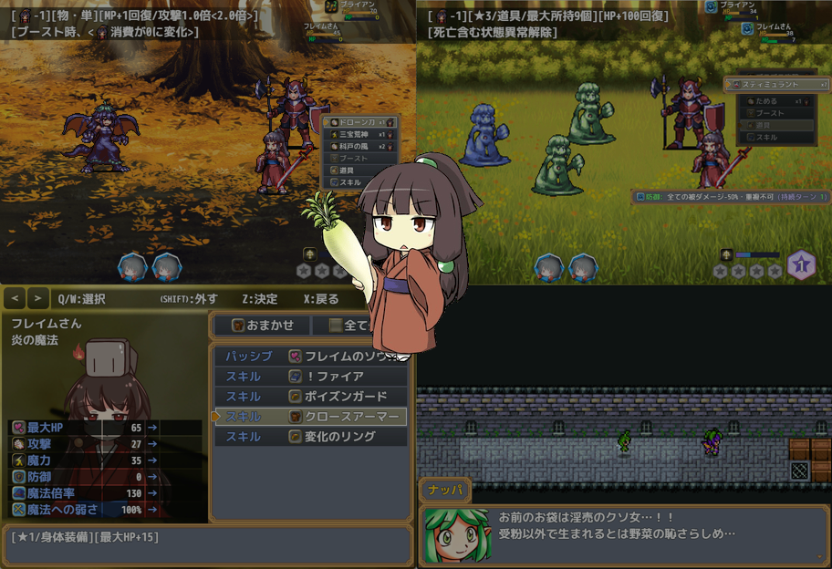

|
 |
|||
作者のコメントはじめまして、VIPの皆様。シャモ星人でございます。かわいいフレイムさんが味噌汁の具を集める内容の短編作品で、 編成→イベント→戦闘を延々と繰り返す闘技場タイプのさっくり終わるデフォ戦RPGです。 レベルが存在せず、スキルと呼ばれる装備によって特殊技能や能力値が変化するのが特徴です。 好きなスキルの組み合わせや使わなかったスキルがあれば教えてくださいね。次回作の参考にするぜ。 主催のコメントちなみに私の好きな味噌汁の具はタマネギ、ジャガイモ、にんじん、豚肉です。 |
|||
| DL(254.2 MB) | 感想掲示板 | ||